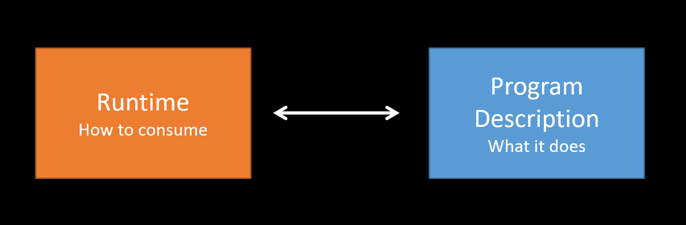
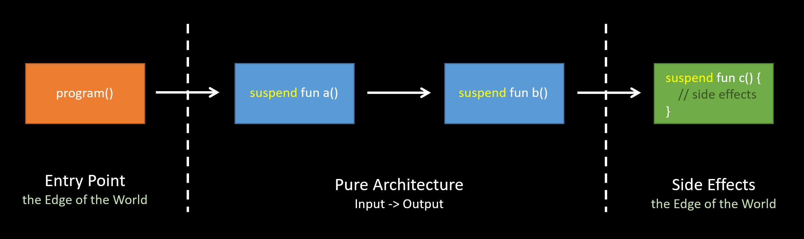
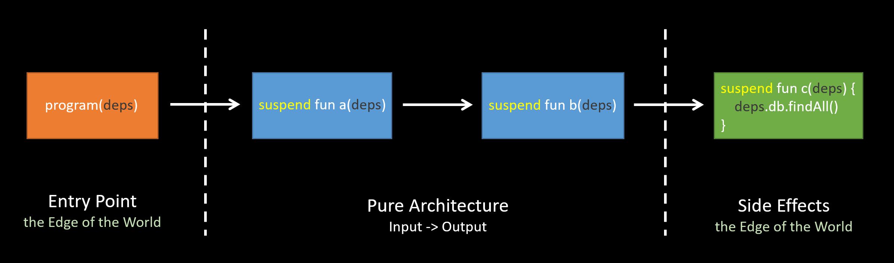
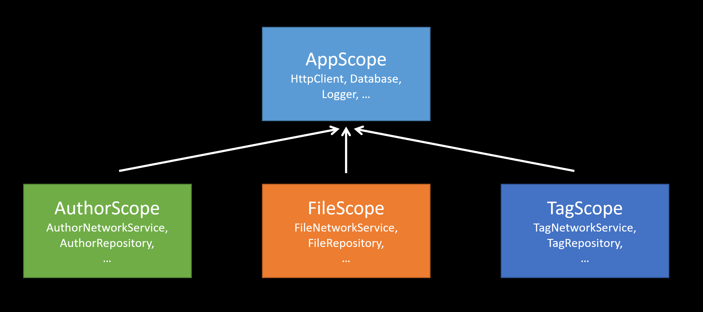

🔍 interpreter of the program
🔍 agnostic of the runtime
suspend➡️ suspend

🔍 Note the side effects are flagged with suspend
How to do logging in Functional Programming ?
The fundamental dichotomy between imperative and functional (declarative) programming
➡️ statements vs. expressions
I/O operation is a statement with side effects, and neither composable nor reusable.
IO TypeIn functional programming, there is a IO type
IO<T>fun loadAuthors(): IO<List<Author>> = IO {
authorNetworkService.loadAuthors()
}
IO Typesuspend effectively makes it puresuspend fun loadAuthors() =
authorNetworkService.loadAuthors()
Leverage suspend
import arrow.core.Either
import arrow.core.computations.either
import arrow.core.right
import org.apache.commons.logging.LogFactory
import other.model.*
object MyLogger {
private val logger = LogFactory.getLog(MyLogger::class.java)
suspend fun <T> info(message: String, data: T): Either<Error, T> =
Either.catch {
logger.info(message)
data
}.mapLeft { Error.LoggerError }
}
suspend fun main() {
val fileName = FileName("Note_A")
val newTag = Tag.TYPE_A
val updatedFileTag = either<Error, Tag> {
val file = downloadFile(fileName).bind()
val updatedFile = updateTag(file, newTag).bind()
MyLogger.info("My File after updating tag: $file", file).bind()
val uploadedFile = uploadFile(updatedFile).bind()
uploadedFile.header.metadata.tag
}
}
sealed class Error {
object UploadFileError : Error()
object FileNotFound : Error()
object InvalidTag : Error()
object LoggerError: Error()
}
suspend fun downloadFile(fileName: FileName): Either<Error.FileNotFound, CustomFile> =
CustomFile(
header = CustomHeader(CustomMetadata(Tag.TYPE_C, Title("Note A"), Author("Joe"))),
content = Content("Note A Content"),
fileFormat = CustomFileFormat.DocumentFile(DocumentFileExtension(".doc")),
name = FileName("Note_A")
).right()
suspend fun updateTag(file: CustomFile, newTag: Tag): Either<Error.InvalidTag, CustomFile> =
CustomFile.header.metadata.tag.set(file, newTag).right()
suspend fun uploadFile(file: CustomFile): Either<Error.UploadFileError, CustomFile> =
file.right()
🔍 comprised by a set of objects and the operations to work with those
⬇️
Interpreter evaluates the operation and provides implement details
sealed class FileDBOps<out A> {
data class SaveFile(val file: CustomFile) : FileDBOps<CustomFile>()
data class RemoveFile(val fileName: FileName) : FileDBOps<FileName>()
data class FindFileByFileName(val fileName: FileName) : FileDBOps<CustomFile>()
object FindAll : FileDBOps<List<CustomFile>>()
}
// Evaluates the operation and provides impl details.
suspend fun <A> interpreter(deps: Dependencies, op: FileDBOps<A>): A = when (op) {
is FileDBOps.SaveFile -> deps.database.insert(op.file)
is FileDBOps.RemoveFile -> deps.database.delete(op.fileName)
is FileDBOps.FindFileByFileName -> deps.database.get(op.fileName)
is FileDBOps.FindAll -> deps.database.loadAll()
} as A
interface FileDBOps {
suspend fun saveFile(file: CustomFile): CustomFile
suspend fun removeFile(fileName: FileName): FileName
suspend fun findFileByFileName(fileName: FileName): CustomFile
suspend fun findAll(): List<CustomFile>
}
🤔 How to implement and “pass” to our program ?
Why dependency management is a big problem in OOP?
🤔 Does we really need Dependency Injection
in Functional Programming ?
In functional world,
if you think in terms of inputs and outputs …
➡️ There is no function dependency, only data dependency.
🔍 It’s just a composition of (A) -> B, (B) -> C, etc.
➡️ That’s why FP is easy to test.
In real world,
we usually need to deal with side effects

➡️ via Extension Function
class Dependencies(
val authorService: AuthorServiceOps,
val fileService: FileServiceOps,
val tagRepository: TagDBOps
) {}
suspend fun Dependencies.findAllTags(): List<Tag> =
tagRepository.findAll()
suspend fun Dependencies.loadAuthors(): List<Author> =
authorService.loadAuthors()
suspend fun Dependencies.loadFilesAndUpdateTag(): List<CustomFile> {
val authors = loadAuthors()
val files = fileService.findFilesByAuthor(authors)
val tags = findAllTags()
return files.map {
CustomFile.header.metadata.tag.set(it, tags.first())
}
}
Only pass dependencies on the first call.
suspend fun main() { // Edge of the world
val deps = Dependencies(AuthorService(), FileService(), TagRepository())
val files = deps.loadFilesAndUpdateTag()
println(files)
}
🔍 Extension functions are resolved statically, hence this approach is compile time checked.
import other.model.*
interface AuthorServiceOps {
suspend fun loadAuthors(): List<Author>
}
interface FileServiceOps {
suspend fun findFilesByAuthor(fileNames: List<Author>): List<CustomFile>
}
interface TagDBOps {
suspend fun findAll(): List<Tag>
}
class AuthorService : AuthorServiceOps {
override suspend fun loadAuthors(): List<Author> =
listOf(
Author("Scott Wlaschin"),
Author("Calliope Mori")
)
}
class FileService : FileServiceOps {
override suspend fun findFilesByAuthor(fileNames: List<Author>): List<CustomFile> =
listOf(
CustomFile(
header = CustomHeader(CustomMetadata(Tag.TYPE_C, Title("Domain Modeling Made Functional"), Author("Scott Wlaschin"))),
content = Content("The useful knowledge of Domain Modeling and design mindset."),
fileFormat = CustomFileFormat.DocumentFile(DocumentFileExtension(".pdf")),
name = FileName("Domain Modeling Made Functional")
),
CustomFile(
header = CustomHeader(CustomMetadata(Tag.TYPE_C, Title("end of a life"), Author("Calliope Mori"))),
content = Content("A beautiful song."),
fileFormat = CustomFileFormat.MediaFile.AudioFile(AudioFileExtension(".mp3"), BitRateKBitPerS(320)),
name = FileName("end of a life")
)
)
}
class TagRepository : TagDBOps {
override suspend fun findAll(): List<Tag> = Tag.values().toList()
}
class Dependencies(
val authorService: AuthorServiceOps,
val fileService: FileServiceOps,
val tagRepository: TagDBOps
) {}
suspend fun Dependencies.findAllTags(): List<Tag> =
tagRepository.findAll()
suspend fun Dependencies.loadAuthors(): List<Author> =
authorService.loadAuthors()
suspend fun Dependencies.loadFilesAndUpdateTag(): List<CustomFile> {
val authors = loadAuthors()
val files = fileService.findFilesByAuthor(authors)
val tags = findAllTags()
return files.map {
CustomFile.header.metadata.tag.set(it, tags.first())
}
}
suspend fun main() { // Edge of the world
val deps = Dependencies(AuthorService(), FileService(), TagRepository())
val files = deps.loadFilesAndUpdateTag()
println(files)
}
Any program with effects can be described as
suspend (Dependencies) -> Resultsuspend Dependencies.() -> Resultsuspend fun loadAuthors(deps: Dependencies): List<Author> =
deps.authorService.loadAuthors()
// implicitly pass dependencies
suspend fun Dependencies.loadAuthors(): List<Author> =
authorService.loadAuthors()
A.() -> B
➡️ Used for DSL and…
remember the Scope Function ?
public inline fun <T> T.apply(block: T.() -> Unit): T {
contract {
callsInPlace(block, InvocationKind.EXACTLY_ONCE)
}
block()
return this
}
We can segregate scopes and compose in different ways depending on the use cases we need to model.

// An example of an application wide scope for app wide dependencies.
abstract class AppScope {
val httpClient: HttpClient by lazy { HttpClient() } // lazy initialization
val database: Database by lazy { Database() }
val logger: Logger by lazy { Logger() }
}
// Our application class
object Application {
// Retained as singleton at an application level
val diScope = object : AppScope() {}
}
// Our service scope
interface AuthorScope {
private val appScope: AppScope get() = Application.diScope
val authorNetworkService: AuthorNetworkOps get() = AutherNetworkService(appScope.httpClient) // algebra
val authorRepository: AuthorDBOps get() = AuthorRepository(appScope.database)// algebra
}
interface FileScope {
private val appScope: AppScope get() = Application.diScope
val fileNetworkService: FileNetworkOps get() = FileNetworkService(appScope.httpClient) // algebra
val fileRepository: FileDBOps get() = FileRepository(appScope.database)// algebra
}
interface TagScope {
private val appScope: AppScope get() = Application.diScope
val tagNetworkService: TagNetworkOps get() = TagNetworkService(appScope.httpClient) // algebra
val tagRepository: TagDBOps get() = TagRepository(appScope.database)// algebra
}
class Rectangle(val width: Int, val height: Int) { // Delegate
fun area() = width * height
}
class Window(val bounds: Rectangle) { // Delegator
fun area() = bounds.area() // Delegation
}
fun main() {
val rectangle = Rectangle(5, 10)
val window = Window(rectangle)
println(window.area()) // 5 * 10 = 50
}
Delegation with by
interface ClosedShape {
fun area(): Int
}
class Rectangle(val width: Int, val height: Int) : ClosedShape { // Delegate
override fun area() = width * height
}
// Delegator
class Window(val bounds: ClosedShape) : ClosedShape by bounds // Delegation
fun main() {
val rectangle = Rectangle(5, 10)
val window = Window(rectangle)
println(window.area()) // 5 * 10 = 50
}
lazy ➡️ the value is computed only on first access
get()
get()
Initialize with lazy
val lazyString: String by lazy {
println("Initialize my lazyString...")
"Hello"
}
fun main() {
println(lazyString) // execute the lambda passed to lazy(), and remember the result
// Initialize my lazyString...
// Hello
println(lazyString) // simply return the remembered result
// Hello
}
abstract class MyAbstractString {
val myString = "Hello"
}
fun main() {
val myAbstractString = MyAbstractString() // Error: Cannot create an instance of an abstract class
}
abstract class MyAbstractString {
val myString = "Hello"
}
fun main() {
val myAbstractString = object : MyAbstractString() {} // object expressions extend `MyAbstractString`
println(myAbstractString.myString)
}
➡️ Singleton
import other.model.*
interface AuthorServiceOps {
suspend fun loadAuthors(): List<Author>
}
interface FileServiceOps {
suspend fun findFilesByAuthor(fileNames: List<Author>): List<CustomFile>
}
interface TagDBOps {
suspend fun findAll(): List<Tag>
}
class AuthorService : AuthorServiceOps {
override suspend fun loadAuthors(): List<Author> =
listOf(
Author("Scott Wlaschin"),
Author("Calliope Mori")
)
}
class FileService : FileServiceOps {
override suspend fun findFilesByAuthor(fileNames: List<Author>): List<CustomFile> =
listOf(
CustomFile(
header = CustomHeader(CustomMetadata(Tag.TYPE_C, Title("Domain Modeling Made Functional"), Author("Scott Wlaschin"))),
content = Content("The useful knowledge of Domain Modeling and design mindset."),
fileFormat = CustomFileFormat.DocumentFile(DocumentFileExtension(".pdf")),
name = FileName("Domain Modeling Made Functional")
),
CustomFile(
header = CustomHeader(CustomMetadata(Tag.TYPE_C, Title("end of a life"), Author("Calliope Mori"))),
content = Content("A beautiful song."),
fileFormat = CustomFileFormat.MediaFile.AudioFile(AudioFileExtension(".mp3"), BitRateKBitPerS(320)),
name = FileName("end of a life")
)
)
}
class TagRepository : TagDBOps {
override suspend fun findAll(): List<Tag> = Tag.values().toList()
}
abstract class Dependencies {
val authorService: AuthorServiceOps by lazy { AuthorService() }
val fileService: FileServiceOps by lazy { FileService() }
val tagRepository: TagDBOps by lazy { TagRepository() }
}
suspend fun Dependencies.findAllTags(): List<Tag> =
tagRepository.findAll()
suspend fun Dependencies.loadAuthors(): List<Author> =
authorService.loadAuthors()
suspend fun Dependencies.loadFilesAndUpdateTag(): List<CustomFile> {
val authors = loadAuthors()
val files = fileService.findFilesByAuthor(authors)
val tags = findAllTags()
return files.map {
CustomFile.header.metadata.tag.set(it, tags.first())
}
}
suspend fun main() { // Edge of the world
val deps = object : Dependencies() {}
val files = deps.loadFilesAndUpdateTag()
println(files)
}
Basically, an abstract can do what an interface can
➡️ both subclass / implementation need to implement abstract function
🤔 What is the difference?
can have …
abstract class Shape {
lateinit var color: String
private val shapeColor: String
get() = color
init {
color = "pink"
}
fun defaultColor() {
println("The shape's default color is $shapeColor.")
}
abstract fun side(): Int
abstract fun computeArea(): Double
abstract fun computePerimeter(): Double
}
class Rectangle(var l: Int, var w: Int) : Shape() {
override fun side(): Int = 4
override fun computeArea(): Double = (w * l).toDouble()
override fun computePerimeter(): Double = (2 * (l + w)).toDouble()
}
fun main() {
val rect = Rectangle(2, 3)
println("Area: ${rect.computeArea()}")
println("Perimeter: ${rect.computePerimeter()}")
rect.defaultColor()
}
➡️ Delegation for lazy initialization
abstract class Dependencies {
val authorService: AuthorServiceOps by lazy { AuthorService() }
val fileService: FileServiceOps by lazy { FileService() }
val tagRepository: TagDBOps by lazy { TagRepository() }
}
You only want to share behavior with the class but not the code between a set of objects
interface Shape {
fun side(): Int
fun computeArea(): Double
fun computePerimeter(): Double
fun addColor(): String
}
class Rectangle(var l: Int, var w: Int) : Shape {
override fun side(): Int {
return 4
}
override fun computeArea(): Double {
return (w * l).toDouble()
}
override fun computePerimeter(): Double {
return (2 * (l + w)).toDouble()
}
override fun addColor(): String {
return "red"
}
}
fun main() {
val rect = Rectangle(2, 3)
println("Area: ${rect.computeArea()}")
println("Perimeter: ${rect.computePerimeter()}")
println("Color: ${rect.addColor()}")
}
➡️ Set of operations for algebras
interface FileDBOps {
suspend fun saveFile(file: CustomFile): CustomFile
suspend fun removeFile(fileName: FileName): FileName
suspend fun findFileByFileName(fileName: FileName): CustomFile
suspend fun findAll(): List<CustomFile>
}
🔍 Program to an interface, not an implementation.
Recap the Dependency Scoping
// An example of an application wide scope for app wide dependencies.
abstract class AppScope {
val httpClient: HttpClient by lazy { HttpClient() } // lazy initialization
val database: Database by lazy { Database() }
val logger: Logger by lazy { Logger() }
}
// Our application class
object Application {
// Retained as singleton at an application level
val diScope = object : AppScope() {}
}
// Our service scope
interface AuthorScope {
private val appScope: AppScope get() = Application.diScope
val authorNetworkService: AuthorNetworkOps get() = AutherNetworkService(appScope.httpClient) // algebra
val authorRepository: AuthorDBOps get() = AuthorRepository(appScope.database)// algebra
}
interface FileScope {
private val appScope: AppScope get() = Application.diScope
val fileNetworkService: FileNetworkOps get() = FileNetworkService(appScope.httpClient) // algebra
val fileRepository: FileDBOps get() = FileRepository(appScope.database)// algebra
}
interface TagScope {
private val appScope: AppScope get() = Application.diScope
val tagNetworkService: TagNetworkOps get() = TagNetworkService(appScope.httpClient) // algebra
val tagRepository: TagDBOps get() = TagRepository(appScope.database)// algebra
}
Define scopes as interfaces or abstract classes for flexibility
➡️ replace implementation in tests
class AuthorService(private val diScope : AuthorScope = object : AuthorScope {}) {
suspend fun loadAuthors(): List<Author> =
diScope.authorNetworkService.loadAuthors()
}
With algebras, we can override the dependencies we want to replace only
class AuthorServiceTest {
private lateinit var authorService: AuthorService
@Before
fun setup() {
authorService = AuthorService(diScope = object : AuthorScope {
override val authorNetworkService: AuthorNetworkOps = MockAuthorNetworkService()
override val authorRepository: AuthorDBOps = MockAuthorRepository()
})
}
@Test
fun testLoadAuthors() = runBlocking {
val actual = authorService.loadAuthors()
Assertions.assertEquals(listOf("Joe", "Mark"), actual)
}
}
➡️ Mock the dependencies and test without touching the real network or database
Alternatively, use Testcontainers!
IO and suspend and logger